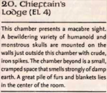
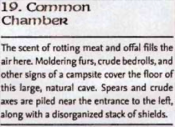
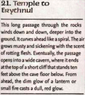
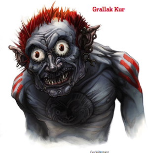

Week 8 - That addled beast.
Great game this week, although another long session - which is good. Ta muchly to Bevis who hosted the night. Andrew was down with tonsillitis, but participated via video conference - making a move that completely turned around the entire grimlock caverns section of this module. However, the connection dropped in and out and while Andrew was not connected Flash made some atypically boneheaded spell choices, courtesy Steve who was playing him. Oh well. We can put it down to stress.
The party still debating what to do, Flash (who has been studying hard) pipes up and says "Hey - last night while we rested I worked out how to cast second-level spells! I can now do Spider Climb!".
Well. You can imagine the stir that this causes. They agree to cast spider climb on Tom, who can simply climb the walls and hoist the party up onto the rope bridge. Flash, meanwhile, casts Mirror Image. Tom begins to ascend the rock pile under the far end of the bridge, and is immediately attacked by a pair of chokers hiding among the rocks. They come damn close to strangling him to death before Flash makes it across the cavern to hit the three of them with a Color Spray, stunning them so that Arn and Jericho can deal with the chokers.
Frith pours some of the healing liquid from their magical chalice of healing onto Tom, speaking the brief incantaion inscribed into the wood, and the bruises around his throat fade and his breathing becomes easier. Tom resumes his ascent and climbs up onto the wall next to the fissure where the bridge is anchored. He peers around the edge to look within, aided by his blindsight.
The chalice is simply a wand of Cure Light Wounds, which we made chalice-shaped for flavour reasons. The party has found another wand, and I am thinking of making it bandage-shaped. Since a wand is a spell-completion item - unlike a potion - the chalice has some words written on the side that the cleric repeats as the liquid is administered. Mechanicallly, it's identical. You can also do potions of cure as magical fruit - particularly if they are druidic. It's little things like that, they say, that make a campaign memorable.
Within, a bit further down the passage, are three grimlocks. One, unknown to the party, runs further into the complex to alert the rest of the tribe. One heads out to deal with Tom, and one readies a javelin. The second one pokes its head out, ready to deal with intruders, and Tom (who is spider-climbing on the wall outside) seizes him and fling him to the floor below. The remaining grimlock attempts to run past Tom and cross the bridge to alert the archers stationed on that first ledge. Tom swings with his fist as he runs past, knocking him unconscious and off the bridge. On the floor below, one of the grimlocks lays dying, but one is merely unconscious. The party revives it and attempts to question it, but it merely begins calling for help. The party gag it and attempt to gain its cooperation, but reckons without the fact that all this tribe are fanatically devoted to the cause of the Ebon Triad. They are, regrettably, forced to kill it.
Above them, an archer appears and begins firing at the nearest party member - which happens to be Frith. His Mirror Image is - of course - useless against grimlocks, who are blind. He casts a spell that briefly disables it, but the other arrives and also begins firing. Tom, under the effect of his Spider Climb climbs around the walls of the cavern (quicker than attempting to negotiate the stalagmite-strewn cavern floor). At this point, Flash has an utter epiphany and casts Silence at the place where they stand.
It works an absolute treat. The grimlocks are effectively blinded, and Tom easily deals with them. The party climb the now choker-free rubble, with the aid of spider-climbing Tom, and head down a long passage leading further in.
Meanwhile, the grimlocks have been altered by that third grimlock, and quickly prepare their defence.  They make their stand in a cavern whose floor is sharply sloped into three rough tiers, giving them an advantage of height and impeding movement. The fight begins - javelins and longspears are employed, and Tom cannot use his enormous reach as effectively as usual, as the defenders are above him. The defenders are falling to Arn's axe and Tom's hammer, but not without effect.
They make their stand in a cavern whose floor is sharply sloped into three rough tiers, giving them an advantage of height and impeding movement. The fight begins - javelins and longspears are employed, and Tom cannot use his enormous reach as effectively as usual, as the defenders are above him. The defenders are falling to Arn's axe and Tom's hammer, but not without effect.
From within the complex a figure appears - the Kennel Master, and two of his pets. They bare their teeth and bay, the unsettling sound magically throwing Tom into a panic, although Arn resists it. Flash casts silence on the area where they stand and they retreat back, behind its effect. As Arn and Jericho tidy up the few remaining defenders, Frith casts Remove Fear on Tom. Tom, Jericho, and Arn head towards the Kennel Master to deal with him and his pets. And as they do so, a grimlock appears - big and covered with scars and tattoos. He roars with rage and begins moving towards them.
Then Flash, in the brainwave of the night, casts Silence ... on Tom. To the grimlocks, a ball of impenetrable darkness heads towards the, smelling of grimlock blood, human, ogre, and dwarf. The kennel master and his pets fall easily. But the chief is no coward and if his ears have failed him, his nose has not. He swings and lands a very solid blow indeed on (I think) Arn. But he is not only overmatched by Tom and Arn, but blind and without the blindsight granted to him by his keen ears he is easy prey to a rogue. He acquits himself well, but inevitably falls.
I missed some stuff here, as always, but that's basically how it went down. Dammit - I keep going easy on these guys. I decided that the chief and kennel master were not in the front chamber to start with because they lacked time from when the alarm was raised. I should have had the chief down on the floor trashing spellcasters and the krenshars using fear on the fighters from above, while the boys harassed the party with missile fire.
The part take stock and loot the chief's chamber and the barracks. Then they head down the remaining passage, which winds down into the earth.
At the end, it opens into a large chamber. There are three guards, and beyond them a grimlock perched on a small stone ledge above a fire .
Without further ado, Grallak Kur's guards (for indeed it is he) attack. The guards are quickly disposed of, but Grallak casts a spell and Tom is immobilised. The party advance towards Grallak himself, high on his ledge. While Frith flails about attempting to climb the tricky rock formations, Flash and Jericho manage it with comparative ease, and Arn is still under the effect of Flash's spell of Spider Climb.
I should have given Grallak's guards some fighter levels - even a few ranks of Commoner would have given them enough hp to last more than a round.
Grallak casts an enchantment or two to fortify himself for the battle, and targets the paty with a Sound Burst. This injures Flash severely, and - nearly out of spells anyway - he takes cover. Arn and Jericho ascend to Grallak's ledge, and engage him in battle. But the battle goes poorly. Grallak is high in his God's favour, and a tough foe. He is clad in banded mail which, as the party later finds, is enchanted. The party has trouble landing a blow.
Eventually, however, the enchantment holding Tom immobile fades. He hoists Frith (still trying to climb) up onto the first ledge, who then goes to tend to Flash. He heads toward the battle. Although the ledge on which Grallak stands is cramped, spider climbing he can simply cling to the wall and reach Grallak with his immensely long arms. Jericho takes advantage by slipping behind Grallak and going for the kidneys. One of Grallak's battle enchanments fade, and the party begins to have more luck.
Grallak is still a tough foe, but the party begins to land a blow or two. Grallak, finding that Arn is strongly armoured and that Tom (who is clinging to the wall) is out of reach, begins to focus his attacks on Jericho behind him, thinking to reduce the foe one by one. But it is not enough. A few solid blows from Tom and Arn, not to mention some nasty knife work from Jericho, and he eventually goes down.
But …
As Grallak breathes his last, Frith's head snaps up, his expression alert - far different from his usual (probably drug-induced) mellow vagueness. For he has just been struck with a sense of terrible foreboding. A fleeting vision of blasphemous, terrifying, six-armed doom.